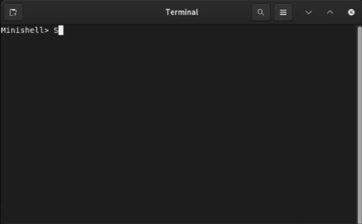

42 Portfolio

MINISHELL
The Minishell project is a group project where we created a simple shell similar to bash using the C programming language. This project helped me understand how shells work, including command execution, process management, and file handling in a Unix-like environment..

FRACTOL
Built by our team of professional developers, we ensure the most rigourous and modern websites. Built from scratch using HTML and CSS. Only the best for you.